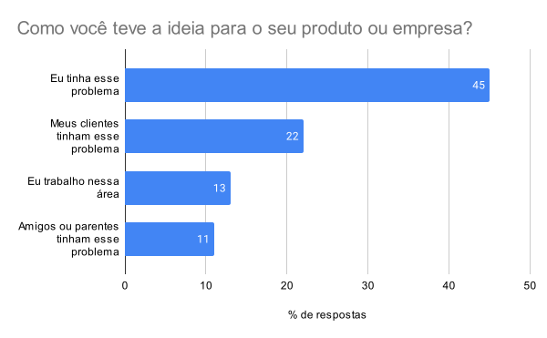

Engenharia de Software Moderna
1 Microempresas de Software como Serviço
1.1 Introdução
Existem diversos caminhos na área de empreendedorismo envolvendo Engenharia de Software. Hoje em dia, talvez, o caminho mais desejado seja criar uma startup de sucesso, obter financiamento via capital de risco e virar um unicórnio. No entanto, esse não é um caminho trivial, pois são pouquíssimas empresas que alcançam esse nível de sucesso. Além disso, já existe uma vasta literatura sobre a criação e administração de startups financiadas por meio de capital de risco.
Por outro lado, existe um caminho oposto, que se costuma chamar de autofinanciado (bootstrapped), no qual a empresa é criada com recursos próprios e mantida com os resultados do seu faturamento. Como ele é menos comentado, pelo menos na literatura, resolvemos escrever este pequeno artigo sobre o assunto.
Quando adotam um modelo de assinatura, essas empresas são chamadas de micro-SaaS. Podemos definir esse conceito da seguinte forma:
Micro-SaaS é um pequeno empreendimento de software, autofinanciado, administrado por um ou dois desenvolvedores e que atende a uma necessidade específica. Um micro-SaaS segue um modelo de serviços (Software as a Service), com pagamentos recorrentes (assinaturas) por parte de centenas ou alguns milhares de clientes.
1.2 Exemplos de Micro-SaaS
Para ficar mais claro, vamos dar alguns exemplos de sistemas micro-SaaS:
Saber Feedback é uma aplicação que possibilita adicionar um pequeno botão
Feedback
na lateral direita de todas as páginas de um site Web. Usuários podem usar esse botão para dar feedback sobre o site e suas páginas, reportando desde erros ortográficos até bugs de lógica ou de interface. O sistema é mantido por um único fundador, mais alguns freelancers.Transistor é um sistema para hospedagem e distribuição de podcasts, que é mantido por dois fundadores.
Permanentlink é um sistema que se propõe a resolver um problema enfrentado por editoras de livros digitais: esses livros incorporam diversos links que com o tempo podem
quebrar
. A ideia então é disponibilizar uma URL permanente para os documentos referenciados. Enquanto o link estiver ativo, o sistema redireciona a conexão para ele; se o link quebrar, retorna-se uma cópia da página armazenada localmente pelo sistema.Reform é um sistema para criação de formulários. Ou seja, o sistema tem que competir com concorrentes importantes, tal como sumarizado na seguinte página da Wikipédia. Apesar disso, os fundadores estão tentando criar um sistema alternativo que propicie uma experiência mais agradável para criação e resposta de formulários.
1.3 Escolhendo o Problema
O grande desafio de uma microempresa de software é achar um segmento de mercado que tenha um problema real que possa ser resolvido por meio de um sistema relativamente pequeno. E, mais importante, esse problema tem que ser relevante para atrair clientes dispostos a pagar uma assinatura mensal para ter acesso a um sistema que o resolva.
Os resultados de uma pesquisa realizada em 2020 pela MicroConf, uma empresa organizadora de eventos, ajudam a entender como a escolha desse problema e sistema ocorre na prática. Nessa pesquisa, foram entrevistados fundadores de SaaS autofinanciados. Uma das perguntas era a seguinte: Como você teve a ideia para o seu produto ou empresa? Veja o percentual de respostas no seguinte gráfico.

O seguinte padrão fica então claro nas respostas: a escolha foi de um problema que os fundadores ou pessoas próximas estavam enfrentando. Portanto, os fundadores conheciam bem o problema e também tinham acesso a pessoas que poderiam validar ou mesmo serem clientes das primeiras versões do sistema.
Os resultados da pesquisa conectam-se com duas expressões usadas com frequência em desenvolvimento de software:
Scrath your own itch, que pode ser traduzida como
coçar a sua própria coceira
. Ou seja, empreendedores devem escolher sistemas que vão resolver problemas que eles também estão enfrentando.Eat your own dog food, que pode ser traduzida como
comer a mesma comida do seu cachorro
. Ou seja, empreendedores devem ser também usuários dos sistemas que desenvolvem.
1.4 B2B ou B2C?
É importante também definir se seu sistema será B2B (Business-to-Business) ou B2C (Business-to-Customers). Geralmente, a maioria de sistemas micro-SaaS são voltados para empresas ou profissionais autônomos, isto é, são B2B. Provavelmente, esse é o caso dos exemplos de sistemas que mencionamos acima.
Via de regra, sistemas B2B têm um ciclo de venda mais demorado, pois uma venda pode depender da aprovação de várias pessoas na empresa que está contratando o sistema. Por outro lado, o preço da assinatura tende a ser maior, quando comparado com sistemas B2C.
Já sistemas B2C são mais comuns em áreas como entretenimento, educação, cursos, ferramentas de produtividade pessoal, controle de finanças pessoais, etc. As decisões de compra desses sistemas tendem a ser mais rápidas e sujeitas a gatilhos emocionais. Porém, as assinaturas são mais baratas.
1.5 Canais de Distribuição
De nada adianta ter uma excelente ideia e não ter capacidade de execução, isto é, capacidade de concretizar sua ideia em um produto de software que não tenha bugs, que tenha uma excelente interface, um desempenho muito bom e que não tenha brechas de segurança e privacidade.
Porém, também de nada adianta ter um excelente produto se ninguém
tomar conhecimento dele. Na verdade, a premissa de que um produto bom
se vende sozinho
costuma ser falsa.
Logo, é fundamental planejar, testar e orçar os canais de distribuição que pretende usar para divulgar o seu micro-SaaS. Existem dois tipos principais de canais de distribuição:
Canais outbound, por meio dos quais você procura os clientes ativamente. Por exemplo, comprando anúncios no Google, Facebook, Instagram, etc. Embora menos comum no caso de pequenos sistemas, pode-se também contratar vendedores para entrar em contato com possíveis clientes do seu micro-SaaS.
Canais inbound, por meio dos quais o cliente descobre seu sistema e site. Isso acontece principalmente quando você investe em marketing de conteúdo, por exemplo, criando um blog com artigos sobre o problema resolvido pelo seu sistema. Os clientes podem então chegar a seus artigos ao pesquisarem no Google. Além de blogs, é possível gerar conteúdo criando podcasts, canais no YouTube, e-books, etc.
Adicionalmente, um modelo freemium também pode ajudar a conseguir clientes, assumindo que eles já tomaram conhecimento do seu produto e visitaram o seu site. Nesse modelo, os clientes podem testar o sistema por um tempo de forma gratuita.
Resumindo, ao montar um micro-SaaS, você deve:
Focar em um problema real que afete um número relevante de usuários (seu mercado).
Em seguida, você deve implementar o melhor sistema que resolva esse problema (seu produto);
E também deve encontrar os melhores canais de distribuição que vão permitir que o mercado tome conhecimento do seu produto.
1.6 Outras Responsabilidades
Além de construir, manter e vender o produto, os fundadores de uma microempresa de software são responsáveis por outras funções, tais como:
Cuidar da parte de operação. No entanto, essa tarefa ficou mais simples devido à disponibilidade de sistemas de computação em nuvem que permitem criar máquinas virtuais com todo o software básico instalado.
Cuidar da parte de cobrança e recebimento das assinaturas. Porém, hoje também existem serviços de terceiros para isso.
Cuidar da parte de atendimento e suporte a clientes. Para isso, é importante automatizar e documentar todos os processos e, também, usar sistemas de low-code, como Zapier.
1.7 Precificação
Um outro desafio importante consiste na definição do preço da assinatura de um SaaS. Normalmente, uma vantagem desses sistemas está na sua capacidade de escala. Isso implica que o preço de um SaaS não precisa estar unicamente relacionado com os seus custos. Em vez disso, a precificação pode se basear no valor que o sistema gera para os seus assinantes.
Explicando de modo mais prático, deve-se definir algumas faixas de preço, de forma que o preço aumente quando o cliente usa mais o sistema e, portanto, tira mais valor dele.
Suponha, por exemplo, um sistema para aplicação de provas online. Hipoteticamente, esse sistema pode ter quatro faixas de preço:
- Gratuito, permitindo no máximo uma prova por mês, para um número máximo de 40 alunos por prova.
- Básico, três provas por mês, para até 100 alunos por prova.
- Profissional, dez provas por mês, para até 100 alunos por prova.
- Corporativo, oitenta provas por mês, sem limites no número de alunos por prova.
Ou seja, o preço aumenta em função do valor e da importância que o sistema tem para cada perfil de assinante.
Na verdade, esse procedimento costuma ocorrer também com outras assinaturas, como de Internet (quando preço varia com a velocidade de acesso) ou TV a cabo (quando preço varia em função do número de canais contratados).
No entanto, o número de planos ou faixas de preço deve ser pequeno e limitado. No caso de SaaS, não é comum, por exemplo, realizar customizações ou implementar funcionalidades no sistema apenas para viabilizar a sua venda para um determinado cliente. Ou seja, um SaaS é um produto de software que é vendido, com o mesmo conjunto de funcionalidades, para vários clientes.
1.8 Barreiras de Entrada
Um importante risco de uma microempresa de software é resolver um problema ou operar em um mercado com uma baixa barreira de entrada. Em outras palavras, pode ser relativamente fácil que sistemas semelhantes sejam desenvolvidos por concorrentes. Na literatura de negócios, essas barreiras são também chamadas de moats, ou seja, o fosso que protege uma empresa de seus concorrentes, tal como o fosso que protege um castelo de invasores.
Por isso, é importante que fundadores de microempresas de software se preocupem com essa possível baixa barreira de entrada. Por exemplo, eles podem tentar rapidamente conquistar uma grande fatia do mercado, mesmo que seja um mercado pequeno, e depois oferecer um serviço de qualidade, de forma a desestimular os clientes a mudarem para concorrentes.
1.9 Crescendo a Empresa
Quando uma microempresa de software faz sucesso e atrai um número maior de clientes, é natural que o empreendimento cresça, principalmente na parte de atendimento a clientes. E isso também pode ocorrer de forma autofinanciada, com os recursos das próprias assinaturas do serviço.
Um caso interessante é o sistema Less Annoying CRM, para gerenciamento de dados de clientes. Como o próprio nome diz, seu objetivo é ser um sistema de CRM (Customer Relationship Management) mais simples do que os sistemas concorrentes de grandes empresas, como Salesforce. Em contrapartida, a assinatura do sistema é também mais barata. A Less Annoying CRM foi criada em 2009, por dois fundadores. Em 2013, a empresa alcançou 1.5K clientes, com apenas mais um colaborador. Em 2021, ela possui quase 24 mil clientes e 19 colaboradores, a maior parte atuando em atendimento a clientes.
Um segundo exemplo de empresa de SaaS que começou pequena e cresceu bastante, mas mantendo o modelo de autofinanciamento, é a Balsamiq, que faz uma ferramenta para criação de wireframes de baixa fidelidade. A empresa, localizada na Itália, foi fundada em 2008 e, em 2020, obteve um faturamento de US$ 7.3 milhões, com 33 colaboradores.
Outros exemplos, muito conhecidos, são a Mailchimp e a 37signals. A Mailchimp é um sistema de envio de mails, que nasceu em 2001, e operou de forma autofinanciada até ser adquirido por uma outra empresa em 2021 pelo valor de US$ 12 bilhões. A 37signals também opera de forma autofinanciada desde a sua fundação no início dos anos 2000. Ela é responsável pelo sistema de gerenciamento de projetos Basecamp e, mais recentemente, pelo serviço de mail Hey.
1.10 Métricas
Antes de concluir, vamos comentar sobre algumas métricas para avaliar o sucesso de sistemas SaaS:
Custo de Aquisição de Clientes (CAC) (ou Customer Acquisition Cost): custos com propaganda, vendas, etc em um mês / número de novos assinantes no mês.
Receita Mensal Recorrente (MRR) (ou Monthly Recurring Revenue): somatório do valor das assinaturas recebidas no mês. Ou seja, é o faturamento mensal obtido com o sistema. Existe também o termo Receita Anual Recorrente (ARR).
Taxa de Cancelamentos (Churn Rate): número de cancelamentos no mês / total de clientes no início do mês. É importante entender que todo sistema SaaS terá uma taxa de churn. Por exemplo, churns abaixo de 5% já são considerados
bons
. Por outro lado, valores acima de 10% tendem a ser um alerta vermelho.Valor do Tempo de Vida do Cliente (LTV) (Customer Lifetime Value): assinatura média no mês / taxa de cancelamentos. Exemplo: se a assinatura média é de R$ 100 e a taxa de cancelamento for de 5%, temos que LTV = 100 / 0.05 = R$ 2000.
Para um SaaS ser viável, LTV > CAC. Na verdade, costuma-se recomendar que LTV / CAC > 3.0.
Uma outra métrica muito usada para avaliar a satisfação de sistemas SaaS é o Net Promoter Score (NPS). Para calcular essa métrica, precisamos fazer a seguinte pergunta para um conjunto de clientes:
Em uma escala de 0 a 10, qual a chance de você recomendar nosso sistema para um amigo?
Então, o NPS é assim calculado:
NPS = % de respostas 9 e 10 (promotores) menos o % de respostas 0 a 6 (detratores).
Logo, se uma empresa, serviço ou sistema tem 70% de promotores e 10% de detratores, seu NPS será 60 (70-10). Veja que as respostas 7 e 8 são consideradas neutras e, por isso, não entram no cálculo do NPS.
Valores de NPS acima de 50 já são considerados bons. Por exemplo, grandes empresas da Internet costumam ter NPS próximo de 60 ou até mesmo um pouco inferior.
O NPS é importante porque se uma empresa tem um NPS alto então o seu CAC e Churn tendem a ser menores. E, consequentemente, o LTV será maior.
Artigo Relacionado
Veja também este outro artigo sobre monetização de software.
Exercícios
1. Do ponto de vista de monetização, qual a vantagem de micro-SaaS em relação a uma pequena app não-SaaS comercializada em lojas como Google Play e Apple Store?
2. Define-se como churn de receita negativo
a situação na qual
o novo faturamento obtido com os clientes atuais de um sistema supera a
perda de faturamento devido aos cancelamentos de outros clientes. Por
exemplo, um SaaS tinha 100 clientes e faturava R$ 10 mil/mês. Em um dado
mês, ele perdeu 10 clientes, porém os 90 clientes que ficaram geraram um
faturamento de R$ 11 mil. Em outras palavras, tivemos uma perda negativa
de receita, ou seja, um ganho de receita. Explique como isso é possível.
Quais eventos podem ter sido responsáveis por essa situação?
3. Leia e faça um breve resumo do seguinte artigo: Do Things that Don’t Scale (link), de autoria de Paul Graham (2013). No seu resumo, liste algumas tarefas mencionadas no artigo e que, exatamente por não escalarem, devem ser feitas por fundadores nos estágios iniciais de criação de uma empresa de software.
4. Qual o maior e o menor valor possível para a métrica NPS? Em quais situações eles ocorrem?
5. Pesquise e descreva pelo menos um sistema micro-SaaS, de forma semelhante àquela que fizemos no artigo.
6. Total Addressable Market (TAM) é uma métrica que representa o tamanho do mercado de um produto ou serviço. Em outras palavras, é quanto sua empresa pode chegar a faturar supondo que ela conquiste todos os seus potenciais clientes. (a) Por que é importante pensar nesta métrica antes de começar um SaaS? (b) Qual o impacto que essa métrica pode ter na decisão de começar o SaaS de forma autofinanciada ou, alternativamente, já procurar capital externo desde o início da empresa?
Voltar para a lista de artigos.